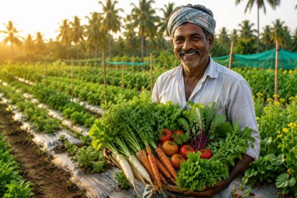

Vaagai Green Farm grows vegetables without chemical sprays in Arakkonam, Tamil Nadu, and runs hands-on workshops on hydroponics, aquaponics and beekeeping.
No chemical sprays. Picked the morning it reaches you.
Real Food, Grown
Without Chemicals
We farm a small plot in Arakkonam and send what we grow to nearby homes the same day. No sprays, no cold storage, no middlemen.
What We Grow and Teach
Farm-Fresh Vegetables
We pick in the morning and deliver the same day. Nothing sits in a warehouse for a week.
Beekeeping
We keep native bee colonies on the farm. The honey is bottled raw, never heated or blended.
Hydroponics
Greens grown in water instead of soil. It uses a fraction of the water and works through the year.
Aquaponics
Fish and plants share one system. The fish feed the plants, the plants clean the water.

Why Families Around Arakkonam Buy From Us
We started in 2020 with one rule: grow food we would feed our own family. That has not changed. Every bed is checked by hand, and nothing leaves the farm unless we would eat it ourselves.
- No synthetic pesticides or chemical fertilisers since 2020
- Harvested each morning and delivered within 24 hours
- Soil and water tested every season
- More than 500 households buy from us regularly
- Workshops for school groups, home gardeners and new farmers
- Native trees and bee colonies kept on the property
Farm Facts at a Glance
- Farming since
- 2020
- Method
- Natural growing, no synthetic pesticides
- Delivery
- Same day in Arakkonam, next day nearby
- Workshops
- Hydroponics, aquaponics, beekeeping
- Farm visits
- Saturday and Sunday, 9 am to 5 pm
- Phone
- +91 96551 18268
Questions We Get Asked
- Is Vaagai Green Farm completely natural?
- Yes. We have used no synthetic pesticides or chemical fertilisers since we started in 2020. We are not certified organic, because the certification cost is hard to justify for a farm our size, but the growing methods we follow are just as strict.
- Where do you deliver?
- We deliver across Arakkonam and nearby towns in Ranipet and Kanchipuram districts. Orders placed before 6 pm are usually delivered the next morning.
- How much do the vegetables cost?
- Prices move with the season and the crop. A weekly basket starts at around ₹400. Message us on WhatsApp at +91 96551 18268 for the current list and rates.
- Can I visit the farm?
- Yes. We take visitors on Saturdays and Sundays between 9 am and 5 pm. Call ahead so someone is free to walk you around. Book a farm visit.
- Do you teach hydroponics and beekeeping?
- We run short workshops through the year. Sessions last two to four hours and cover setup, cost, and the mistakes beginners usually make.
- Do you supply hotels and restaurants?
- Yes. We supply a small number of kitchens in Arakkonam and Ranipet on weekly contracts. Send us your weekly requirement and we will tell you what we can commit to.
The Numbers Behind the Farm
Less water than conventional beds
Families who order again
Customer satisfaction
Eat Better. Grow Something.
Whether you have a balcony, a backyard or a restaurant kitchen, there is a way to work with us. Tell us what you need and we will tell you honestly what we can do.
Talk to Us